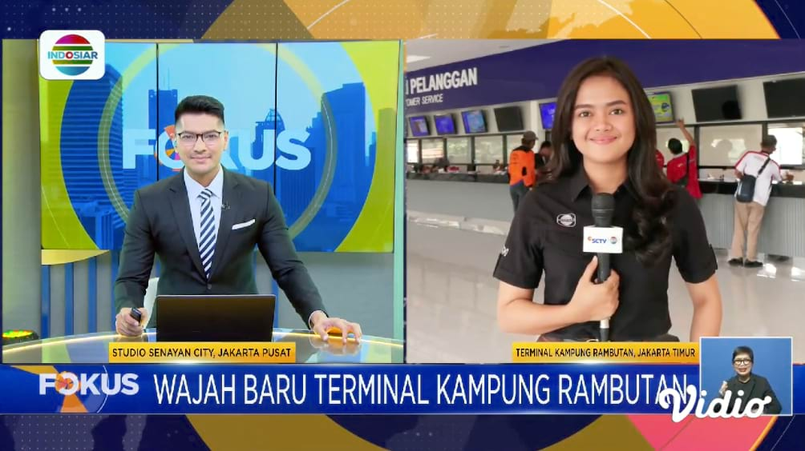

Media Report from NIA
Media Report
Live Report: Keren!! Kini Terminal Kampung Rambutan Lebih Modern dengan Wajah Baru | Fokus
Source :
Indosiar
DATE : 2023-09-14

Terminal Kampung Rambutan kini punya tampilan baru yang lebih modern. rencananya, sistem e-ticketing akan segera diterapkan.